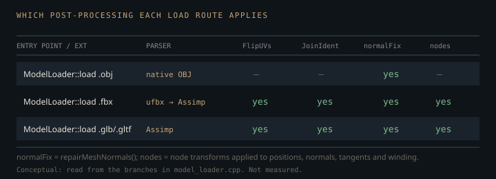

Monograph · Tree · ← Module hub · Asset loaders
scene
Asset loaders
Assimp (GLB/GLTF, node transforms applied), ufbx + Assimp (FBX), native OBJ, procedural primitives.
One front door, three parsers
Every model file enters OHAO through one function. `ModelLoader::load` sends `.obj` to the hand-written parser, `.fbx` to ufbx, and everything else, GLB and GLTF included, to Assimp. Nothing in the tree calls it directly. Everything reaches it through the `Result`-returning `loadResult` wrapper, which adds an empty-path guard, an extension check and an empty-result check, and nothing else, and it has two callers: `model_viewer`, for a model outside the project, and the file asset resolver, which every `ModelAsset` in a scene goes through — so `ohao_game` (playing `helmet_game.scene.json`), `ohao run` and `model_viewer`'s in-project models all load this way.
// GLB, GLTF, DAE, etc → Assimpohao/scene/asset/model_loader.cpp:177auto loaded = mesh.empty() ? ModelLoader::loadResult(file) : ModelLoader::loadMesh(file, mesh);ohao/ecs/asset_resolver.cpp:43`env_demo` and `turntable` call `ModelLoader::load` directly. There is no second glTF importer, so a `.glb` takes the same path wherever it is loaded, with the V coordinate flipped on import.
std::shared_ptr<Model> model = ModelLoader::load(modelPath);examples/env_demo.cpp:238aiProcess_FlipUVs |ohao/scene/asset/model_loader.cpp:334
Why FBX is parsed twice
FBX is the only format OHAO parses with two libraries in sequence, and the reason is a genuine split of competence. ufbx is asked first for the reason the branch comment gives — rotation orders and embedded textures — and it does the coordinate work at load time: it converts the scene to right-handed Y-up and to meters, and it applies each mesh's `geometry_to_node` transform. That is the whole recorded justification — the tree states a preference, not a measured comparison against Assimp.
// Try ufbx first (correct rotation orders, embedded textures)ohao/scene/asset/model_loader.cpp:150opts.target_axes = ufbx_axes_right_handed_y_up; // Convert to Y-upohao/scene/asset/model_fbx.cpp:95What ufbx hands back is topologically useless. The extraction loop appends a fresh vertex for every triangle corner, so vertex count equals index count exactly — triangle soup, in which no vertex is adjacent to any face but its own.
indices.push_back(static_cast<uint32_t>(vertices.size()));ohao/scene/asset/model_fbx.cpp:294That is why the whole file is then read a second time through Assimp, purely for `aiProcess_JoinIdenticalVertices` and friends, and the ufbx geometry is thrown away. Only the textures are kept, and the test that keeps them is narrower than it reads: it fires on Assimp's *albedo* list being empty, then moves the whole ufbx texture set across — normal, rough-metal and emissive vectors and all four index arrays — over whatever Assimp had. A file where Assimp found a normal map but no base color loses that normal map to a ufbx set that may not contain one.
if (assimpModel->albedoTextures.empty() && !model->albedoTextures.empty()) {ohao/scene/asset/model_loader.cpp:159assimpModel->normalTextures = std::move(model->normalTextures);ohao/scene/asset/model_loader.cpp:161The obvious alternative — welding the ufbx output ourselves with a position/normal/UV hash — was not taken. Assimp already ships a tested welder plus degenerate-face removal, cache-locality reordering and infacing-normal repair, so a second full parse buys four passes for one dependency call. The cost is that this is the one route where two libraries' material *orderings* are assumed to match: when the texture guard above fires, `materialTextureIndex` is grafted from ufbx (indexed by `typed_id`) onto geometry whose `materialPerTriangle` uses Assimp's indices, and nothing checks that they agree.
The normal repair, for vertices without a normal
Every model that comes out of `ModelLoader::load` — not just FBX — is run through `repairMeshNormals`, and so is every mesh `loadMesh` returns. On the FBX route that means the *Assimp* geometry: the reassignment happens first, so the repair never touches ufbx's triangle soup.
model = assimpModel;ohao/scene/asset/model_loader.cpp:173It only fills in what the file did not give. A loader that finds no normal leaves zero in the vertex (the OBJ parser and the Assimp emitter both do), and the repair rewrites exactly the vertices whose normal is zero-length or not finite; a model whose every vertex has a normal is returned untouched.
if (!missingNormal(v.normal)) continue;ohao/scene/asset/model_loader.cpp:132For those vertices it buckets positions using an FNV-1a hash of the integer cell coordinates, with a cell edge of one hundred-thousandth of the mesh diagonal:
float cellSize = meshSize * 1e-5f; // ~0.001% of mesh sizeohao/scene/asset/model_loader.cpp:86Face normals are accumulated per bucket as raw cross products. Because $\lVert (p_1-p_0)\times(p_2-p_0)\rVert$ equals twice the triangle area, skipping the normalisation makes the accumulation area-weighted for free — large triangles pull the vertex normal toward their plane in proportion to their area, which is what you want and what a naive normalise-then-sum gets wrong.
A file's own normals are kept, so its hard edges survive: a cube exported with 24 vertices and six flat face normals keeps all six. The repair used to write the smoothed normal back to *every* vertex, which averaged the three normals meeting at each cube corner into one and rounded every flat-shaded box; the level pipeline's blockout showed it (sub-project 5, step 2, `docs/changes/2026-10-26-level-pipeline-step2.md`).
The cost of keeping authored normals is that a mesh exported as triangle soup *with* flat per-face normals (some AI-generated models) now renders faceted, as authored, instead of smoothed on load. Smoothing such a model is an authoring step (Blender's Shade Smooth), not a loader guess.
The node walk
The Assimp path walks the node tree from `mRootNode`, depth first, multiplying each node's matrix onto its parent's, and emits every mesh a node references in that accumulated space. The meshes are concatenated into one vertex and index list with a running offset, so the model's coordinates are the file's scene coordinates, not each mesh's local ones.
const glm::mat4 toModel = parent * toGlm(node->mTransformation);ohao/scene/asset/model_loader.cpp:596uint32_t globalVertexOffset = 0;ohao/scene/asset/model_loader.cpp:524Positions take the full matrix. Normals take the inverse transpose of its upper 3x3, which keeps them perpendicular to the surface under a non-uniform scale; tangents lie in the surface, so they take the 3x3 itself. A matrix with a negative determinant mirrors the mesh, which would turn every triangle inside out, so the emitter swaps two indices of each face and negates the tangent's handedness. The winding matters beyond culling: `repairMeshNormals` above makes the normals a file did not give from it.
const glm::mat3 normalMat = glm::transpose(glm::inverse(linear));ohao/scene/asset/model_loader.cpp:528model->indices.push_back(globalVertexOffset + face.mIndices[mirrored ? 2 : 1]);ohao/scene/asset/model_loader.cpp:588A mesh referenced from several nodes is emitted once per reference: instancing is flattened into copies. `tests/assets/node_transforms.gltf` pins this down: one triangle placed by a rotated and scaled parent, again under a child translation, and once more under a mirroring scale, each checked to 1e-6 with its normal and winding (`sp2b_t04` in `scene_tests`). DamagedHelmet carries its upright pose in its node: the mesh is modelled lying on its back and the node rotates it 90° about X.
static void sp2b_t04_gltf_node_transforms_reach_vertices_normals_and_winding() {tests/scene/scene_tests.cpp:1994On the FBX route the walked geometry is Assimp's, since ufbx's is thrown away (above); ufbx's own extraction applies only the *geometry* transform of a mesh's first instance.
geoTransform = toGlm(mesh->instances.data[0]->geometry_to_node);ohao/scene/asset/model_fbx.cpp:230Up-axis correction is not in this module. It lives downstream in `SceneFramer`: a glTF file is Y up by its specification, so the framer leaves it unrotated; for any other format it decides Y-up versus Z-up by comparing the bounding box's Y and Z extents and, on the Z-up verdict, emits a ±90° rotation about X — sign picked by whether the Z range reaches above zero. That rotation comes back in `FrameResult`, and `model_viewer`'s scene builder copies it into the model entity's local `Transform` (a scene file saved from it keeps it there). A scene file loaded by itself, as `ohao_game` and `ohao run` do, gets only the rotation its `Transform` states.
return computeFraming(model.vertices, isGltf(model));ohao/render/camera/scene_framer.cpp:122result.modelRotation = glm::quat(glm::radians(glm::vec3(posZIsUp ? -90.0f : 90.0f, 0, 0)));ohao/render/camera/scene_framer.cpp:56out.modelTransform.rotation = flipY ? glm::quat(glm::radians(glm::vec3(0, 180, 0))) : frame.modelRotation;examples/example_scenes.hpp:186Roughness arrives by three different roads
All three loaders land their answer in the same slot, `materialColors[i].w`, and from there in the `RenderScene` material table that raster and path tracer share. Two of them read an authored roughness factor first; what separates them is the fallback, and the fallbacks do not agree. Let $g\in[0,1]$ be an authored glossiness and $N_s$ a Phong specular exponent. The second formula belongs to the Assimp route alone, which reads $N_s$ from `AI_MATKEY_SHININESS`; its domain is GLB/GLTF/DAE plus the FBX second pass, never OBJ, which is branched to the native parser before Assimp is reached.
ufbx takes `pbr.roughness` when the material has it, inverting it in place if ufbx flags the file as storing roughness-as-glossiness; failing that it takes $1-g$ from `pbr.glossiness`; failing that, if only a roughness or gloss *texture* exists with no scalar beside it, it stamps 1.0 and lets the texture carry the whole range. Only then does it clamp up to 0.04.
if (mat->pbr.roughness.has_value) {ohao/scene/asset/model_fbx.cpp:131roughness = std::max(roughness, 0.04f);ohao/scene/asset/model_fbx.cpp:145The only rationale the tree gives for that floor is physical and dielectric-scoped — no firefly or sampling argument is recorded anywhere, and the bound does not generalise past dielectrics. No shader re-applies it: the path tracer's closest hit and the G-buffer pass roughness through as authored, and OpenPBR's base floors it at 0.01 when shading. So an FBX material's scalar roughness bottoms out at 0.04, set here, while a glTF's can reach the module's 0.01.
// Physical minimum: no real dielectric surface has roughness < 0.04ohao/scene/asset/model_fbx.cpp:144static const float kMinSpecularRoughness = 0.01;shaders/material/openpbr.slang:27The Assimp route reads `AI_MATKEY_ROUGHNESS_FACTOR` first and remaps shininess only if that left the variable at its 0.5 initialiser — an exact float equality against a sentinel, so a material that genuinely authors roughness 0.5 has it silently overwritten by the shininess conversion. The remap itself is not derived from anything: the standard Phong-to-GGX correspondence is $\alpha=\sqrt{2/(N_s+2)}$, and dividing by 1000 instead means an $N_s$ of 100 — a fairly tight highlight — imports as roughness 0.9.
if (roughness == 0.5f && mat->Get(AI_MATKEY_SHININESS, shininess) == aiReturn_SUCCESS) {ohao/scene/asset/model_loader.cpp:416OBJ is the third road and reads nothing. Its MTL parser does store `Ns` in `MaterialData::shininess`, but no code outside `scene/asset` reads that field; what reaches the GPU is the `materialColors` row, and the OBJ path stamps every row's `.w` with 0.7.
else if (token == "Ns") {ohao/scene/asset/model.cpp:468materialColors.push_back(glm::vec4(mat.diffuse, 0.7f));ohao/scene/asset/model.cpp:245Per-texel roughness only appears if a `{material}_gloss_*` image is sitting beside the model, which the loader inverts and repacks into the green channel of a rough-metal texture. That lands where the closest-hit sampler looks — but the sampler *multiplies*, against that 0.7 scalar. A gloss-mapped OBJ therefore cannot exceed roughness 0.7 at any texel, and every texel is scaled to 70% of its authored value rather than used as authored.
packed[i * 4 + 1] = 255 - gloss; // roughness = 1 - glossohao/scene/asset/model.cpp:315roughness *= rm.g;shaders/rt/path_tracer.slang:937Procedural primitives
`PrimitiveMeshGenerator` is the fourth producer of `Model`s and the only one that reads no file. It builds a cube, a UV sphere, a platform, a cylinder, a cone, a quad and an axis-aligned box. Its caller in the engine is instantiate, which turns each primitive alternative of a `MeshSource` (`SpherePrim`, `CubePrim`, …, `QuadPrim`, `BoxPrim`) into the matching `generate*` call; that is how `cornell_box`'s spheres and walls and `helmet_game.scene.json`'s spinning cube (a `BoxPrim`) are built. The `make*` factories that return a `shared_ptr<Model>` are left to tests.
[&](const CubePrim& p) { PrimitiveMeshGenerator::generateCube(*m, p.size); },ohao/ecs/instantiate.cpp:66void PrimitiveMeshGenerator::generateCylinder(Model& model, float radius, float height, int segments) {ohao/scene/asset/primitive_mesh_generator.cpp:214What the generator fills is geometry only: none of the per-material arrays below. That is not a gap the caller has to close by hand — `render::uploadModel` treats a `Model` without `materialColors` as one submesh with one material, the caller's override material or the table's default — but it means a primitive's color always comes from the entity's `Material` (or the spawn call), never from the generator.
mats.push_back(overrideMaterial ? *overrideMaterial : MaterialDesc{});ohao/render/scene/model_upload.cpp:194What actually crosses into the GPU layer
`scene/asset` contains no `VkDevice`, no `vkCreate*` and no command recording. The decoupling is exercised: `scene_tests` loads the node fixture and the helmet on the CPU, with no device, and checks the geometry that comes back. It is not Vulkan-free either — `Vertex` declares its own `VkVertexInputAttributeDescription` set, so the vertex layout is authored here and merely consumed by the pipeline code.
static void sp2b_t04_damaged_helmet_stands_upright() {tests/scene/scene_tests.cpp:2033That layout carries dead weight. Skeletal animation was removed, but `boneIndices` and `boneWeights` remain in the struct and are still filled by both the ufbx and the Assimp paths — 32 of every 100 bytes per vertex, uploaded to the GPU, read by nothing.
glm::ivec4 boneIndices{0, 0, 0, 0}; // Up to 4 bone influences per vertexohao/scene/asset/model.hpp:25The loaders' real output is not a mesh, it is a material table: six per-material arrays — `materialColors` (rgb + roughness in `.w`), `materialMetallic`, and the four texture-index arrays `materialTextureIndex`, `materialNormalTexIndex`, `materialRoughMetalTexIndex`, `materialEmissiveTexIndex` — plus `materialPerTriangle`, which is *not* parallel to them. It carries one entry per triangle and indexes into them. `render::uploadModel` walks the six by material id — one `MaterialDesc` per `materialColors` row, registered in the `RenderScene` material table — and the seventh by triangle, turning contiguous runs of equal ids into submeshes and copying the list itself into the mesh's triangle material-slot stream. Every loader must therefore fill all seven under one consistent material numbering, or raster and path tracer alike shade the wrong triangles with the wrong textures.
mats[i].roughness = model.materialColors[i].w;ohao/render/scene/model_upload.cpp:177md.submeshes = materialRuns(model, triangleCount);ohao/render/scene/model_upload.cpp:159std::copy_n(model.materialPerTriangle.begin(), n, md.triangleMaterialSlot.begin());ohao/render/scene/model_upload.cpp:163Contracts
- `materialPerTriangle.size()` must equal `indices.size()/3` at every exit. The OBJ path's alpha-card filter drops `fur`/`eyelash`/`tear` triangles *before* the per-triangle array is built, which is the only ordering that keeps this true.
- `materialColors[i].w` is roughness, not alpha. `render::uploadModel` copies it into `MaterialDesc::roughness` with no conversion, and from there it reaches both the raster and the RT shading through the one material table.
- OBJ material indices are assigned while iterating an `unordered_map`, so the numbering is hash order. It is self-consistent within a run, but never persist an OBJ material index across builds.
- `repairMeshNormals` runs on every `ModelLoader::load` result and overwrites author-supplied normals. On the FBX route it never sees ufbx geometry: `model` is reassigned to `assimpModel` before the repair call, so it operates on Assimp's already-welded `GenSmoothNormals` output. Moving the repair above that reassignment would run it on triangle soup and then throw the result away. Adding a "skip if the model already has good normals" guard is not a no-op either — it would hand hard creases back to every model that currently loses them through the facade.
- `Model::loadFromFBX` is ufbx, not Assimp, despite the header comment in `model.hpp` still saying "Assimp-based".
Source files
ohao/scene/asset/model_loader.cppohao/ecs/asset_resolver.cppexamples/env_demo.cppohao/scene/asset/model_fbx.cpptests/scene/scene_tests.cppohao/render/camera/scene_framer.cppexamples/example_scenes.hppshaders/material/openpbr.slangohao/scene/asset/model.cppshaders/rt/path_tracer.slangohao/ecs/instantiate.cppohao/scene/asset/primitive_mesh_generator.cppohao/render/scene/model_upload.cppohao/scene/asset/model.hppohao/scene/asset/model_loader.hppohao/scene/asset/primitive_mesh_generator.hppParent hub for the full pipeline narrative; this page is the file-level design unit. Sitemap · hover glossary terms anywhere.